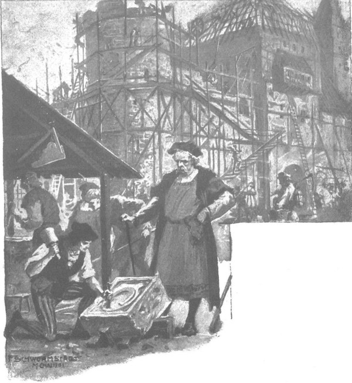

Họ sống ở trang Moczydoly, còn ông Maćko thì đã xây cho họ một tòa thành nhỏ ở Bogdaniec. Tòa thành xây lên rất chậm, vì ông muốn xây các bờ thành bằng đá và vôi, còn tháp canh thì bằng gạch, mà vật liệu này rất khó tìm trong vùng. Năm đầu tiên, ông cho đào con hào, công việc khá dễ dàng, vì ngọn đồi nơi được chọn để xây tòa thành đã từng được đào, có lẽ từ thời còn ngoại đạo, vì vậy chỉ cần dọn sạch những cây to và những bụi táo gai đã mọc sum sê trong các khe sâu, sau đó đắp bờ và đào đến độ sâu cần thiết. Khi nạo vét, người ta đã khơi ra cả một mạch nguồn rất nhiều nước, nhanh chóng lấp đầy con hào, vì thế ông Maćko phải tìm lối thoát cho lượng nước dư thừa. Sau đó, ông xây dựng một tường phòng thủ cắm các cọc gỗ nhọn trên bờ kè, rồi bắt đầu tích lũy gỗ để xây tường thành, với những cây gỗ sồi to đến ba người khiêng không nổi và những cây thông không bị mục khi chôn dưới lớp đất sét khô cũng như dưới lớp đất bùn ẩm ướt có rễ cây cỏ. Mặc dù có sự hỗ trợ thường xuyên của những người nông phu từ Zgorzelice và Moczydoly, mãi sau một năm ông mới bắt đầu dựng được các tường thành, và ông còn hăng hái hơn vì trước đó Jagienka đã sinh hạ được hai đứa trẻ song sinh. Khi ấy, bầu trời rộng mở đối với lão hiệp sĩ, vì ông đã có người để ông phải lao tâm khổ tứ, ông biết rằng dòng họ Mưa Đá sẽ không bị tuyệt diệt, và Móng Ngựa Cùn sẽ còn nhiều phen phải lội trong máu kẻ thù.

Ông Maćko biết rằng móng ngựa cùn sẽ còn nhiều phen phải lội trong máu kẻ thù
Cặp song sinh được đặt tên là Maćko và Jaśko.
- Lũ trẻ, - ông nói, - thật đáng ca ngợi, khắp vương quốc không có trẻ nào sánh bằng, mà bố mẹ chúng thì lại vẫn còn rất trẻ.
Ông yêu chúng ngay lập tức bằng một tình yêu rộng lớn, và ông không nhìn thấy ai sau Jagienka. Ai ca ngợi cô với ông thì có thể nhận được bất cứ thứ gì người ấy muốn. Vì cô, người ta đâm ghen tị với Zbyszko, và họ ca ngợi cô không chỉ vì điền sản, mà bởi cô thực sự tỏa sáng trong cả vùng, như đóa hoa đẹp nhất trong mọi bông hoa đồng nội. Cô đã mang lại cho chồng của hồi môn đồ sộ, nhưng lớn hơn cả của hồi môn là tình yêu và vẻ đẹp tuyệt vời làm chói mắt mọi người, cả vẻ tao nhã và lòng can đảm mà không ít hiệp sĩ có thể tự hào. Chỉ vài ngày sau khi sinh con, cô đã đến trang trại như không có chuyện gì, và sau đó cùng chồng đi săn hoặc cưỡi ngựa từ Moczydoly đến Bogdaniec vào buổi sáng rồi quay trở lại với cậu Jaśko và ông Maćko trước buổi trưa. Chồng yêu cô như con ngươi trong mắt, ông Maćko yêu cô, gia nhân yêu cô, vì với họ cô luôn có trái tim nhân hậu, còn ở Krześnia, khi cô đến nhà thờ vào ngày Chúa nhật, cô được chào đón bởi những tiếng rì rầm thán phục và ngưỡng mộ. Người trước đây từng theo đuổi cô, gã Cztan ghê gớm trang Rogowo, có vợ là con gái một điền chủ, sau lễ misa, khi ngồi uống rượu trong một tửu điếm với lão Wilk trang Brzozowa, đã nói với ông lúc ngà ngà: “Tôi thường tranh nhau với con trai của bác vì muốn lấy cô ấy, nhưng cũng chẳng khác gì muốn hái sao trên trời?’
Còn nhiều người khác công nhận rằng ngay cả trong hoàng cung ở Kraków cũng khó tìm được một ai tuyệt vời đến vậy. Bên cạnh sự giàu có, sắc đẹp và sự trang nhã, người ta cũng vô cùng ngưỡng mộ vẻ tươi trẻ và sức mạnh của cô. Có người còn bảo cô là “người phụ nữ dám cầm lao vào rừng săn gấu; và không cần cắn hạt óc chó, chỉ đặt trên ghế và ngồi lên là nó sẽ vỡ nát như thể bị ép bằng cối đá”. Người ta ca ngợi cô như thế tại giáo xứ Krześnia, ở các làng lân cận, thậm chí cả tỉnh trấn Sieradz. Dẫu ghen tị với Zbyszko trang Bogdaniec, nhưng người ta không ngạc nhiên khi chàng có được cô, vì vinh quang chiến chinh của chàng thật rạng rỡ, điều mà không ai trong vùng có được.
Các hiệp sĩ trẻ và quý tộc kể cho nhau nghe những câu chuyện về bọn lính Đức đã bị chàng đánh hạ trong các trận chiến do Witold lãnh đạo và những trận đấu tay đôi trên đất bằng. Người ta đồn rằng chưa hề có kẻ nào địch được chàng, rằng tại Malborg chàng đã đánh ngã ngựa cả mười hai người, trong đó có cả em trai của đại thống lĩnh là Ulryk, cũng như chàng đã từng thi đấu với các hiệp sĩ thành Kraków và chính hiệp sĩ Zawisza Czarny bất khả chiến bại cũng là bạn thân thiết của chàng. Một số người không muốn tin những lời đồn thổi quá phi thường ấy, nhưng khi nói về việc sẽ chọn ai trong vùng, nếu các hiệp sĩ Ba Lan phải đấu với người phương xa, họ vẫn nói: “Dĩ nhiên, Zbyszko” - rồi sau đó mới kể đến gã Cztan lông lá trang Rogowo và các võ sĩ địa phương khác, thua xa người thừa kế trẻ tuổi trang Bogdaniec về tài nghệ hiệp sĩ.
Sự giàu có cũng đem lại lòng tôn trọng của mọi người dành cho chàng, ngang với vinh quang. Không phải mất công, mà nhờ Jagienka chàng đã có được cả Moczydoly lân điền sản to lớn của cha tu viện trưởng, nhưng trước đó chàng đã là chủ Spychow cùng với kho báu khổng lồ mà ông Jurand tích lũy được, ngoài ra, người ta còn thì thầm kháo nhau rằng chiến lợi phẩm mà các hiệp sĩ Bogdaniec thu lấy và đoạt được, từ giáp phục, ngựa chiến, áo choàng, đồ trang sức, đủ để nuôi đến cả ba hoặc bốn làng.
Họ coi đó là ân sủng đặc biệt của Chúa dành cho gia tộc Mưa Đá, với gia huy Móng Ngựa Cùn, vì chỉ vừa mới đây đã gần như tiêu tan, ngoài trang Bogdaniec trống rỗng ra thì không còn gì khác, vậy mà bây giờ lại trở thành điền trang lớn nhất cả vùng. Người già bảo nhau: “Thì sau vụ hỏa hoạn, ở Bogdaniec chỉ còn mỗi một ngôi nhà xiêu vẹo, mà còn thiếu cả tay người làm, nên điền sản cũng phải nhờ họ hàng trông hộ, thế mà giờ đây lại xây được cả thành quách. Họ rất khâm phục, nhưng nó đi cùng với cảm nhận chung một cách bản năng, rằng theo ý Chúa thì cả quốc gia cũng đang đi với đà tiến không kìm hãm tới một điều tốt đẹp kỳ vĩ nào đó, vì vậy họ không hề đố kị. Ngược lại, cả vùng khoe khoang và rất tự hào về những hiệp sĩ trang Bogdaniec. Họ như bằng chứng sống về những gì một quý tộc có thể đạt đến nếu kết hợp cánh tay mạnh mẽ với trái tim dũng cảm và hoài bão phiêu lưu của hiệp sĩ. Nhìn gương họ, nhiều người cảm thấy ngôi nhà của mình, ranh giới gia đình mình quá chật chội, trong khi ngoài kia là biết bao tài sản lớn lao, bao vùng đất mênh mông có thể được chiếm lấy với những lợi ích to lớn cho bản thân và cả vương quốc. Và sự dư thừa sức lực mà các dòng tộc cảm thấy đang khiến cả cộng đồng sục sôi, giống như nước sôi tất phải làm bật vung nồi. Các lãnh chúa thông thái Kraków và đức vua yêu chuộng hòa bình có thể kìm hãm sức mạnh ấy trong một thời gian, trì hoãn chiến tranh với kẻ thù truyền kiếp suốt nhiều tháng năm dài, nhưng không có lực lượng nào của con người có thể bóp nghẹt hoàn toàn sức mạnh ấy, không thể ngăn nổi bước đi của một tinh thần chung muốn tiến đến sự vĩ đại.